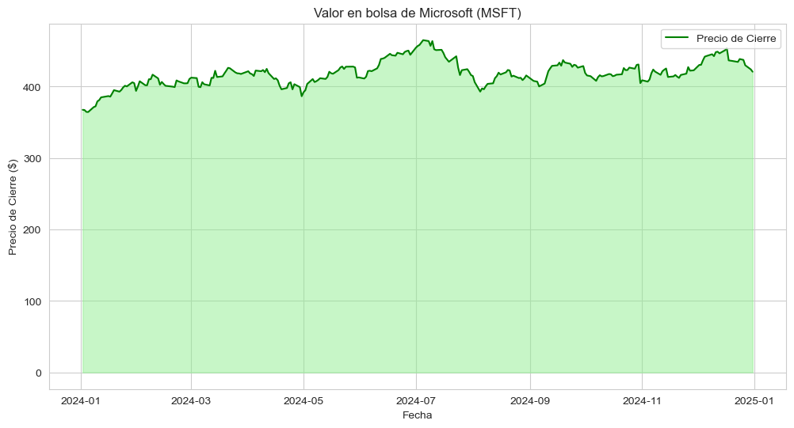
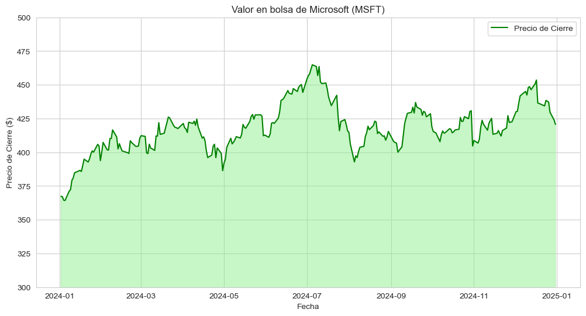
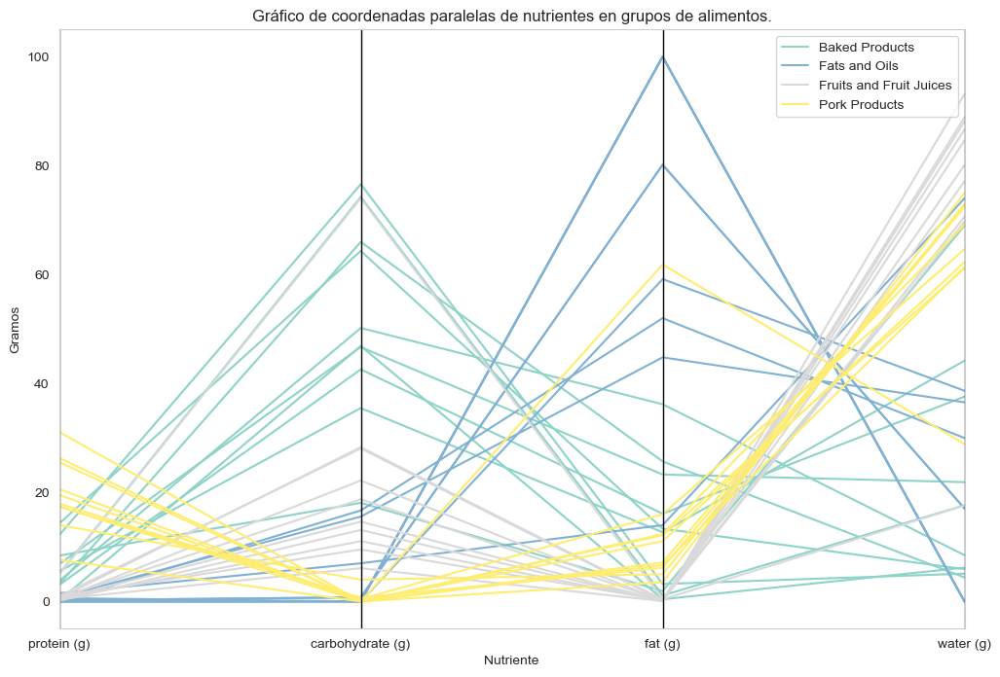
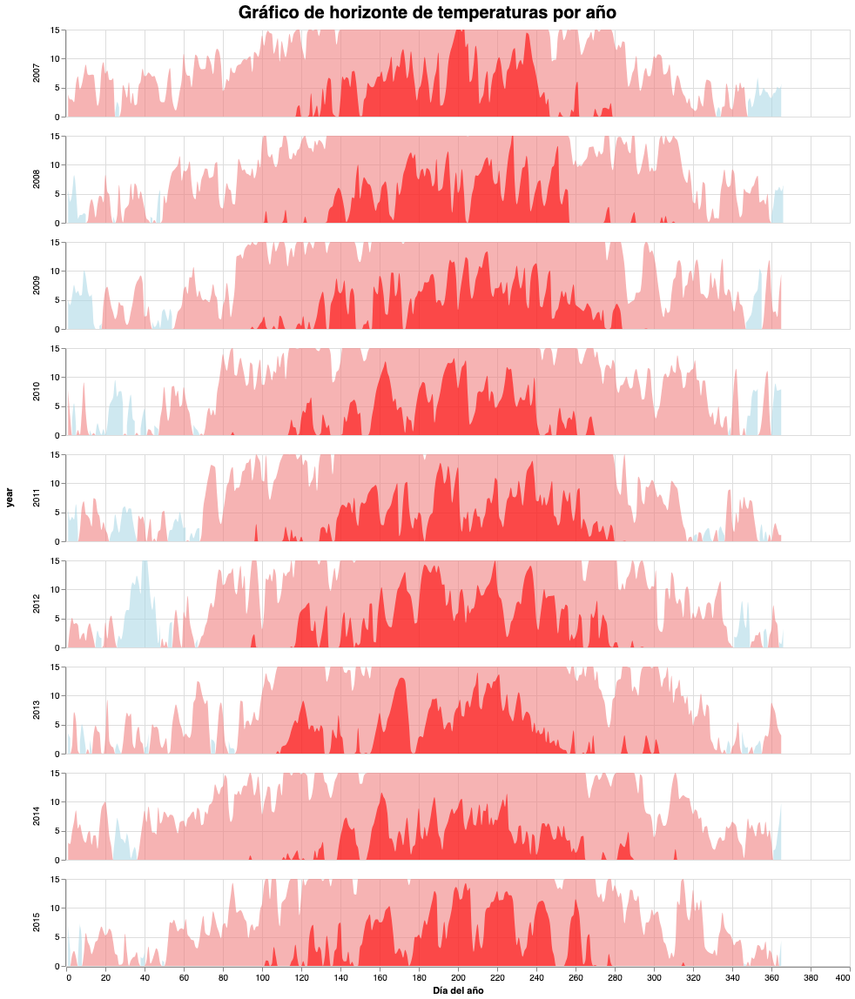

Area Chart 1

Fuente de datos: Conexión a Yahoo Finance desde Python (Stock Market de Microsoft).
Area Chart Detail

Fuente de datos: Conexión a Yahoo Finance desde Python (Stock Market de Microsoft).
Parallel Coordinates Graph

Fuente de datos: Dataset de nutrientes disponible en GitHub.
Horizon Graph

Fuente de datos: Dataset de datos meteorológicos disponible en Kaggle.